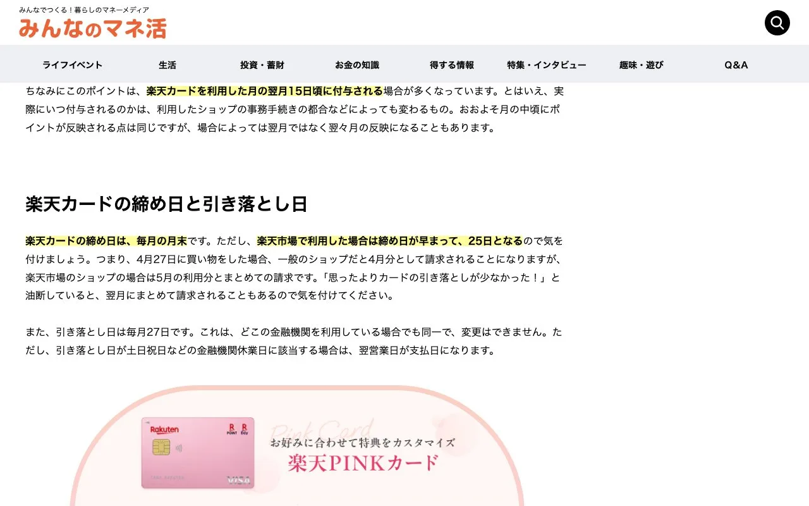

クレジットカードは、使った分をあとでまとめて支払う後払いの仕組みです。その代金がいつ確定し、いつ引き落とされるかは、カード会社によって違います。この記事では、三井住友カード・JCBカード・楽天カードの公式発表をもとに、「締め日」「確定日」「支払い日」のしくみを比較します。
01締め日・確定日・支払い日の3つの言葉
クレジットカードの支払いには、3つの日付が出てきます。締め日にその月のカード利用が締め切られ、確定日に支払い金額が確定し、支払い日に登録した口座から引き落とされます。締め日と支払い日は、カード会社やカードの種類によって違うので、まずは3社の公式発表を見ていきます。
02三井住友カードは2パターンから選べる
三井住友カードは、毎月15日締め切りで翌月10日払い、または毎月末日締め切りで翌月26日払いのどちらかを指定できます。
| パターン | 締め日 | 確定日 | 支払い日 |
|---|---|---|---|
| 10日払い | 毎月15日 | 同月25日頃 | 翌月10日 |
| 26日払い | 毎月末日 | 翌月10日頃 | 翌月26日 |
支払い日が土日祝日の場合は、翌営業日に引き落とされます。
03JCBカードは15日締め・翌月10日払いで固定
JCBカードは、ショッピング・キャッシングの利用分ともに、毎月15日に締め切り、翌月10日に支払う方式です。締め日は選べず、常に15日締め・翌月10日払いで固定されています。前月16日から当月15日までの利用分が、その月の15日に締め切られます。

支払い日が土・日・祝日の場合は、翌営業日になります。この点は三井住友カードと共通です。
04楽天カードは月末締め・翌月27日払い、楽天市場だけ例外
楽天カードは、毎月末日が締め日、翌月27日が支払い日で、どこの金融機関を利用していても同一です。締め日・引き落とし日を自分で変更することはできません。

ただし楽天市場で利用した場合だけ、締め日が早まって25日になります。たとえば4月27日に一般のショップで買い物をすると4月分として請求されますが、同じ日に楽天市場のショップで買い物をすると、5月分としてまとめて請求されます。引き落とし日が土日祝日などの金融機関休業日にあたる場合は、翌営業日が支払日になります。
注意確定日は締め日の数日から10日ほどあとです。締め日ぎりぎりの買い物は、集計が間に合わず翌月分として請求されることがあります。
053社の違いをまとめると
| カード会社 | 締め日 | 支払い日 | 変更 |
|---|---|---|---|
| 三井住友カード | 毎月15日 または 毎月末日 | 翌月10日 または 翌月26日 | 申し込み時に選択可 |
| JCBカード | 毎月15日 | 翌月10日 | 固定 |
| 楽天カード | 毎月末日（楽天市場は25日） | 毎月27日 | 変更不可 |
3社とも、支払い日が土日祝日にあたる場合は翌営業日に引き落とされる点は共通です。一方で、締め日・支払い日を選べるかどうかは会社によって違います。
結論締め日と支払い日は会社によって違い、三井住友カードは選べますが、JCBカードと楽天カードは固定です。自分のカードの締め日・支払い日は、公式サイトや会員ページで確認しておくと安心です。
- 三井住友カード15日締め翌月10日払い、または月末締め翌月26日払い（選択制）
- JCBカード15日締め翌月10日払い（固定）
- 楽天カード月末締め翌月27日払い（固定、楽天市場のみ25日締め）
- 支払い日が土日祝日の場合3社とも翌営業日に引き落とし
この記事は、2026年11月21日時点の各社公式発表にもとづいています。実際の締め日・支払い日は、保有しているカードの会員ページ（Vpass、Myページ、楽天e-NAVIなど）で確認してください。